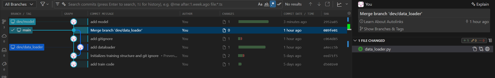
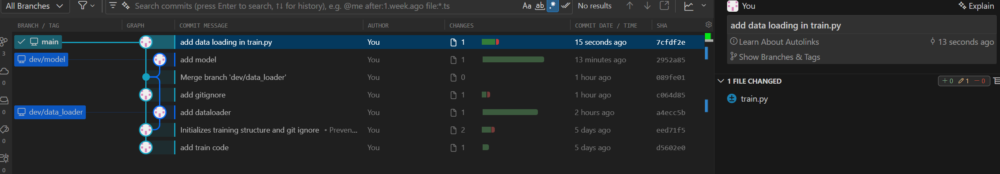
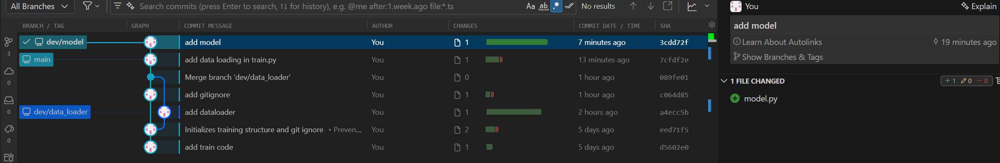
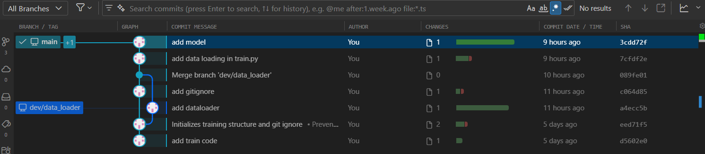

Rebase
What is rebase?
Imagine you created a feature branch from main and started working. Meanwhile, your teammate pushed new commits to main. Now your branch is based on an outdated version of main.
You have two options to catch up:
- Merge
maininto your branch: it works, but creates an extra merge commit every time you sync. - Rebase your branch onto
main: Git picks up your commits and replays them on top of the latestmain, as if you just started the branch today.
%%{init: {'theme': 'base', 'themeVariables': {'git0': '#4A90D9', 'git1': '#E07B53', 'gitBranchLabel0': '#ffffff', 'gitBranchLabel1': '#ffffff', 'commitLabelColor': '#333333', 'commitLabelBackground': '#ffffff'}} }%%
gitGraph
commit id: "A"
commit id: "B"
branch feature
commit id: "C (your work)"
checkout main
commit id: "D (teammate)"After running git rebase main on feature, your commit C is replayed on top of D:
%%{init: {'theme': 'base', 'themeVariables': {'git0': '#4A90D9', 'git1': '#E07B53', 'gitBranchLabel0': '#ffffff', 'gitBranchLabel1': '#ffffff', 'commitLabelColor': '#333333', 'commitLabelBackground': '#ffffff'}} }%%
gitGraph
commit id: "A"
commit id: "B"
commit id: "D (teammate)"
branch feature
commit id: "C' (your work)"The result is a clean, linear history, without extra merge commits cluttering the log.
Warning
Rebase rewrites commit hashes (C becomes C'). Never rebase commits that have already been pushed and shared with others.
Make changes to the project
Let's develop a neural network model model.py.
git status # check if you are in `main` branch
git checkout -b dev/model # create `dev/model` branch and switch to the new branch
Write model.py
import torch.nn as nn
class MLP(nn.Module):
"""Fully-connected network for regression or classification.
Stacks linear layers with the same activation after each hidden layer.
The final layer has no activation.
"""
def __init__(self, input_dim, output_dim, hidden_sizes, activation):
"""Builds the MLP.
Args:
input_dim: Size of the input feature vector.
output_dim: Size of the output (e.g. 1 for scalar regression).
hidden_sizes: Iterable of hidden layer widths, in order.
activation: Callable with no arguments that returns an activation
module instance, e.g. ``nn.ReLU``, ``nn.Tanh``, ``nn.GELU``,
``nn.SiLU``, ``nn.LeakyReLU``, ``nn.ELU``, ``nn.Mish``.
"""
super().__init__()
layers = []
in_d = input_dim
for h in hidden_sizes:
layers.append(nn.Linear(in_d, h))
layers.append(activation())
in_d = h
layers.append(nn.Linear(in_d, output_dim))
self.net = nn.Sequential(*layers)
def forward(self, x):
"""Runs the forward pass.
Args:
x: Input tensor of shape ``(batch, input_dim)``.
Returns:
Output tensor of shape ``(batch, output_dim)``.
"""
return self.net(x)
Stage and commit the changes
Now, suppose that a change has also been made to the main branch. To illustrate this scenario, we will simulate a change in main.
git status
git checkout main # Switch to main using checkout
# Or, using the modern command:
git switch main # Switch to main using switch

Note
You won't see model.py in your project files after switching the branch to main, since you developed model.py in dev/model branch.
Make changes in train.py. Here, we implement data loading.
from data_loader import get_dataloaders
import torch
def train(config):
train_loader, val_loader = get_dataloaders(
config["csv_path"],
config["batch_size"],
config["train_fraction"],
config["shuffle_train"],
config["num_workers"],
)
pass
Stage and commit.

Rebase: keep your feature branch up-to-date
Now let's incorporate the changes from the main branch into your feature branch (dev/model) using rebase. In the shell, you would do:
git checkout dev/model # Switch back to your feature branch
# Or using the modern command:
git switch dev/model
git rebase main # Replay your feature branch commits on top of the latest main
This will "replay" your work from dev/model on top of the updated main branch.

This is useful when you want to keep your feature branch up-to-date with the latest changes from main and maintain a linear project history.
Warning
If there are any conflicts between the changes in main and dev/model branches, Git will pause and ask you to resolve them before continuing (git rebase --continue after fixing conflicts).
Merge into main: fast-forward
After rebase, dev/model is directly ahead of main with no divergence, so Git can advance main to dev/model' without creating a merge commit:
Note
Both git merge and git merge --ff-only produce the same result here since dev/model is directly ahead of main. Prefer --ff-only to guard against accidental merge commits if the branches have diverged unexpectedly.

Rebase vs. Merge
Merge adds a merge commit that joins two histories; the feature branch keeps its original commits, and the graph shows a fork that came back together.
%%{init: {'theme': 'base', 'themeVariables': {'git0': '#4A90D9', 'git1': '#E07B53', 'gitBranchLabel0': '#ffffff', 'gitBranchLabel1': '#ffffff', 'commitLabelColor': '#333333', 'commitLabelBackground': '#ffffff'}} }%%
gitGraph
commit id: "A"
commit id: "B"
branch feature
commit id: "C"
commit id: "D"
checkout main
commit id: "E"
merge feature id: "M (merge commit)"Rebase replays your feature commits on top of the target branch. main stays at E; only dev/model moves forward to D'. Commit hashes change, so avoid rebasing commits already pushed and shared with others.
%%{init: {'theme': 'base', 'themeVariables': {'git0': '#4A90D9', 'git1': '#E07B53', 'gitBranchLabel0': '#ffffff', 'gitBranchLabel1': '#ffffff', 'commitLabelColor': '#333333', 'commitLabelBackground': '#ffffff'}} }%%
gitGraph
commit id: "A"
commit id: "B"
commit id: "E"
branch dev/model
commit id: "C'"
commit id: "D'"